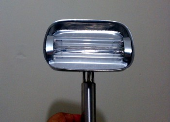
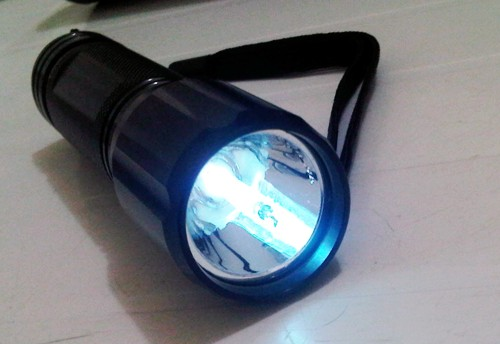
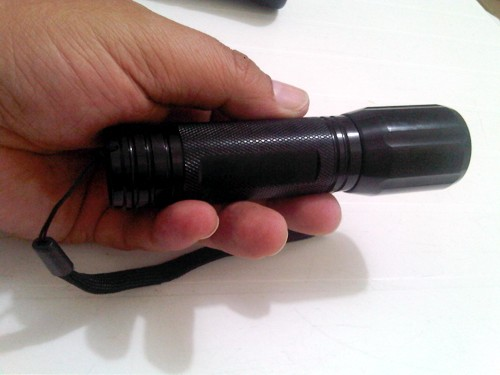
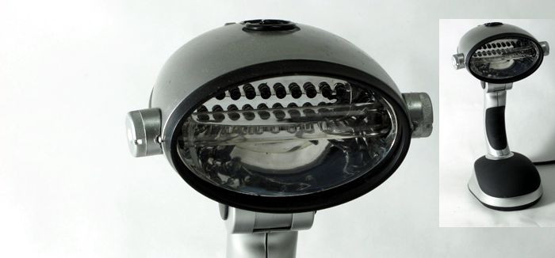

Lámpara Germicida UV
Nuestro producto principal y más vendido. Sistema de esterilización de aguas por luz ultravioleta para cisternas de hasta 20m³. Patentado en Estados Unidos y Ecuador.
Elimina el 99.9% de bacterias, virus, hongos y algas sin añadir ningún químico al agua. Vida útil de 8,500 horas (aprox. 1 año continuo).

Lámpara UV Estándar
Modelo compacto ideal para cisternas residenciales. Instalación directa con dos conexiones de agua y una eléctrica.

Sistema UV Profesional
Para grandes volúmenes industriales y comerciales. Diseño en acero inoxidable de alta resistencia.

Linterna UV Portátil
Linterna ultravioleta de uso doméstico. Esteriliza superficies, agua en recipientes pequeños y ambientes.

Linterna UV Profesional
Modelo profesional con mayor potencia y alcance. Ideal para uso en campo, camaroneras y piscicultura.

Esterilizador para Tinaco
Sistema especialmente diseñado para tinacos y depósitos domésticos. Agua pura directamente de tu tinaco.
¿Por qué UV es la mejor opción?
La necesidad de los productos de esterilización ultravioleta puede encontrarse virtualmente en todas las áreas: aplicaciones de agua industrial, comercial y residencial. Su proceso físico lo hace el componente ideal para múltiples problemas de agua. Su diseño simplista, facilidad de mantenimiento, baja inversión inicial y costos de operación hacen al UV la elección número uno en esterilización de agua.
Solicitar cotización